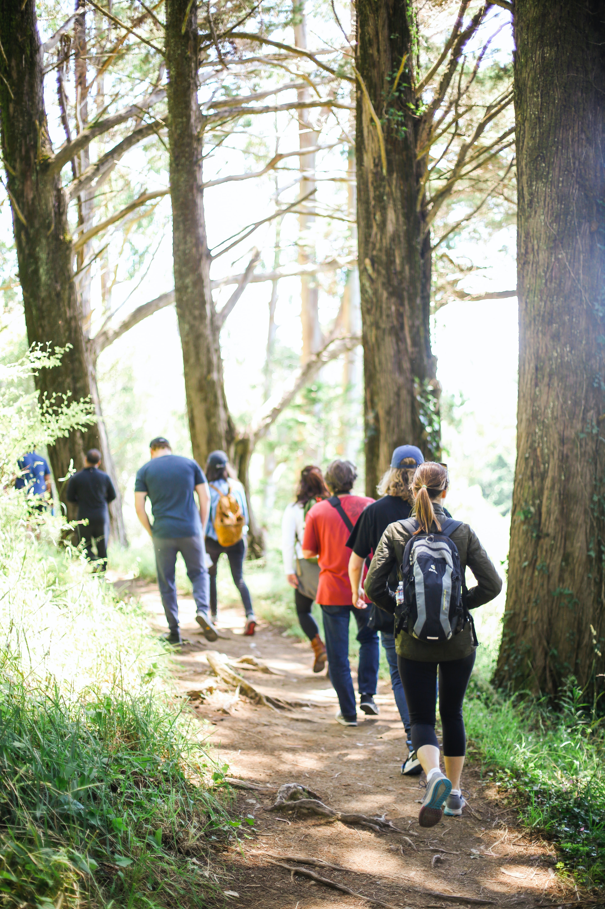
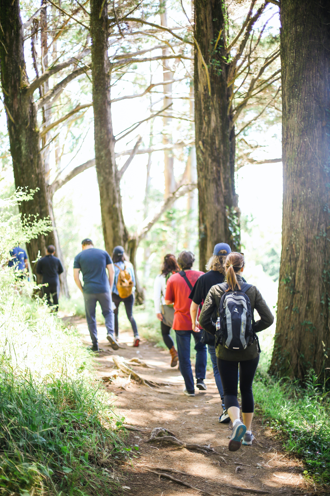
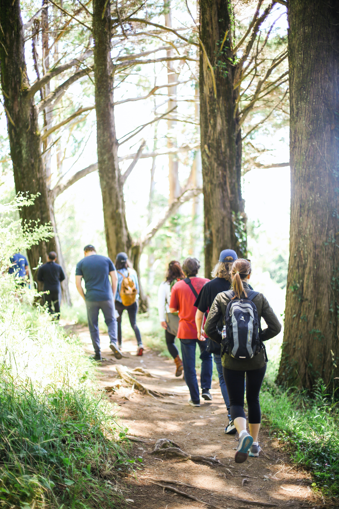

Country Walks brings together all the social hubs of walkers and ramblers around the UK. Currently based in Brighton and Hove we love to share the routes we've walked and the pictures we've taken.
We encourage everyone to send and share your walking routes to us, so we can have a look and try ourseleves. The ones we do get around to trying we post on our website and always credit the recommendation.
We have an online presence as well so we can be sure we able to connect with all the walking socitites as we look to expand our network.
Some people like to walk alone and explore at their pace, but if you ever like to send through any photos from a walking route you have done we'd love to seem them - we're always happy to post them on our website too (with permission, of course). Though, for anyone looking to come and join others on a walk and meet people, we do our best to organise group walks at least a few times a year. However, we are always looking to do more, so do watch this space as it changes with new group walk information.
Please do sign up to our newsletter, while we get our blog developed. Here you'll be able to find and explore more routes and have access to more of the group walks we organise. You can access this in the menu at the top of the page on our 'Sign Up' page, or just below there is a link that will take you straight there.
Happy Walikng Everybody!
